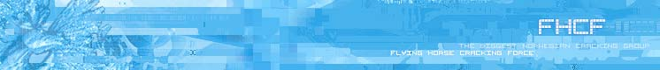

displayed page:
links
.index
.about
.philosophy
.members
.contact
.forum
.tutorials
.releases
.chat
.irc-stats
.logs
.music
.links
Links
Please report dead links
Search
Google - good search engine
Astalavista - Good search engine for crack/hack/security related material
Music
Modarchive - Probably the biggest (and best?) mod site
Chiptune - Lots of chiptunes
Tump - Another mod site
Tools
Protools
Exetools
Crackstore - Tools and tutorials
Programming related
Win32asm - The best Win32Asm programming site ever
Linuxassembly - The best Linux assembly site
Art of Assembly - AoA is a free asm book
Programmers heaven - Huge amount of sourcecodes in various programming languages
Planet source code - Huge amount of sourcecodes in various programming languages
Cracking related material
RET - Reverse Engineering Team
Immortal Descendants - One of the best sites ever, crackme's and tutorials
Lockless - Site with tutorials, crackme's and more
Biw Reversing - A good site with crackme's and tutorials
Fravia - Great site, lots of good info, tutorials
Crackme's - A site full of crackme's and solutions for them
REA - Reverse Engeneering Academy, a competition/course
Unpacking Gods - Unpacking tutorials and tools
Anticrack - God knows what
CryptoKg - Crypto crackmes
USSR - Crypto archive
Chiphertext - Word "finder" for substitution cipher
SecureCode - Online converter, hex, bin, ascii ++
Eternal Bliss - Misc tutorials
+Malattia - Solve the riddles and get access
CrackZ - Misc tutorials and tools
Yates - Tutorials on cd-cracking and unpacking
F0dder - Good tutorials
Kwazy Webbit - KWs site, an old DREAD member, tutorials and more
NoodleSpa - Few but good tutorials
Krobar - Big (and bad) tutorial site
New2Cracking - #New2Cracking's website, crackme's and tutorials for newbies
#C4N - Images of the people in #Cracking4Newbies
CES - Gamehacking tutorials and tools
GHU - Gamehacking tutorials and tools
PalmWarez - Palm tutorials and tools
Wotsit - Info about various file formats
ZOR - News about the cracking scene (fixed)
1999 © 2006